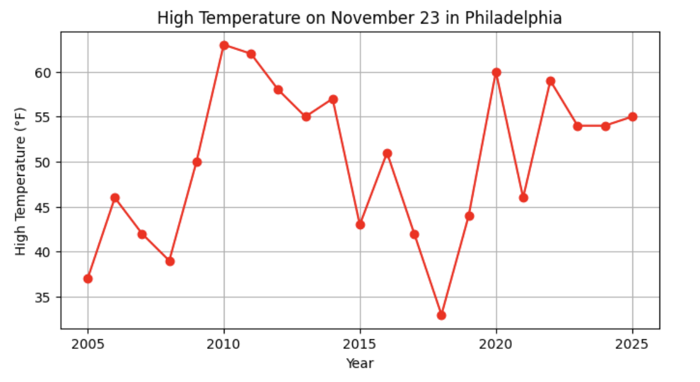
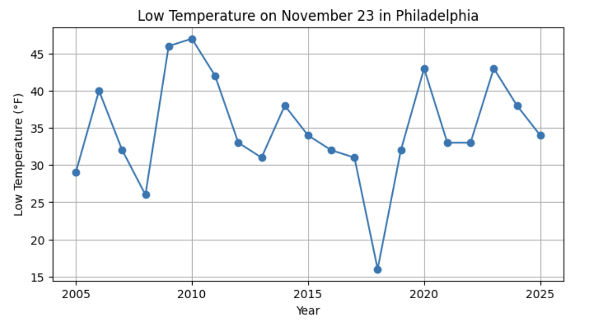
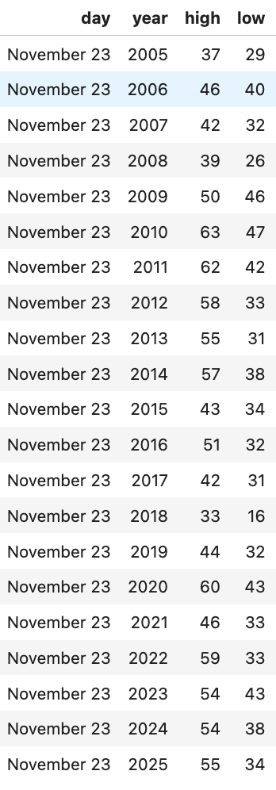
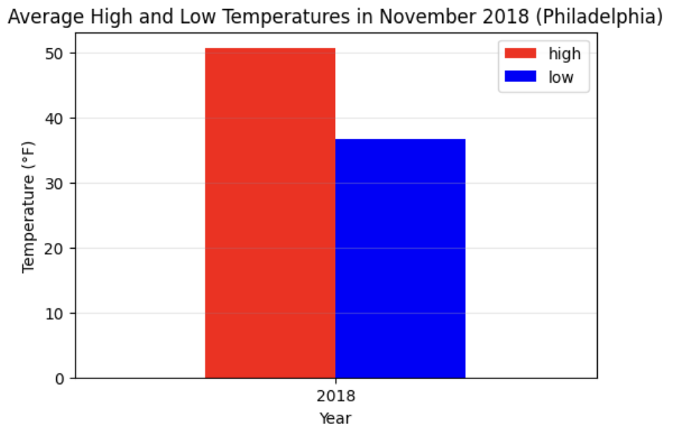
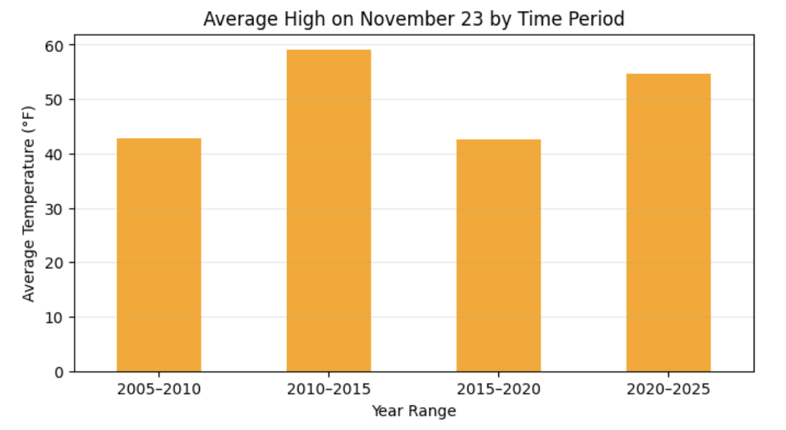
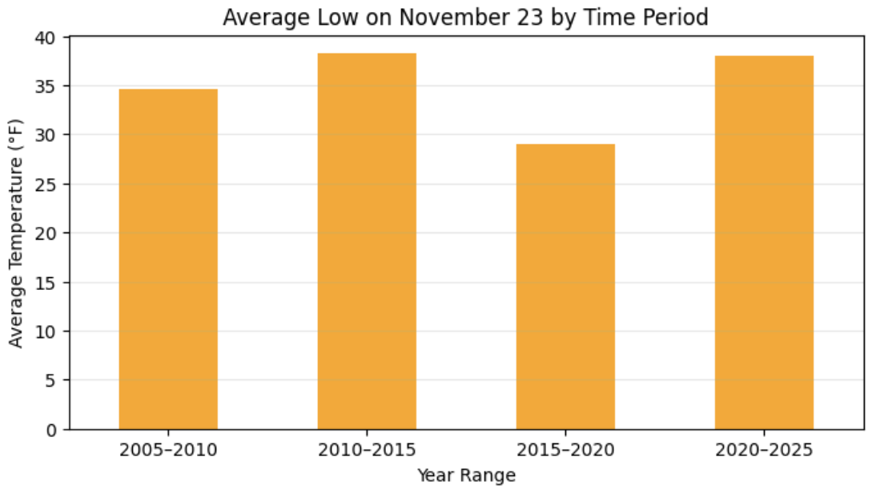
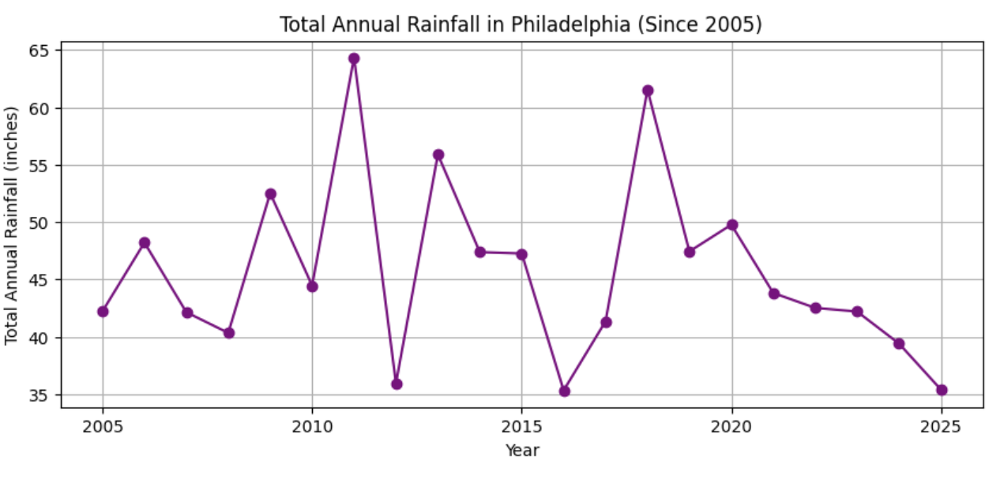
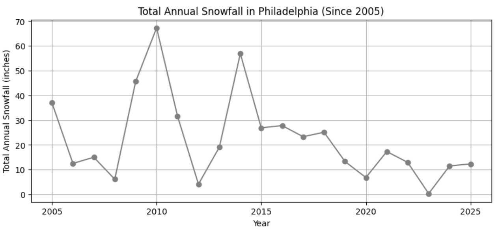
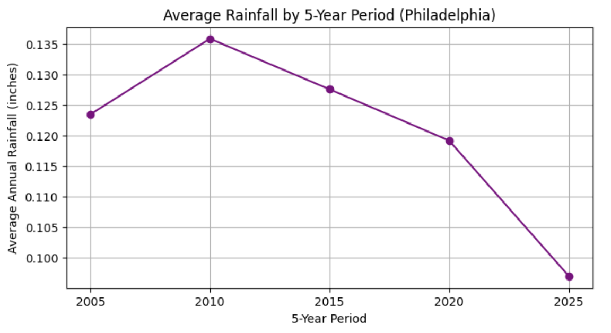
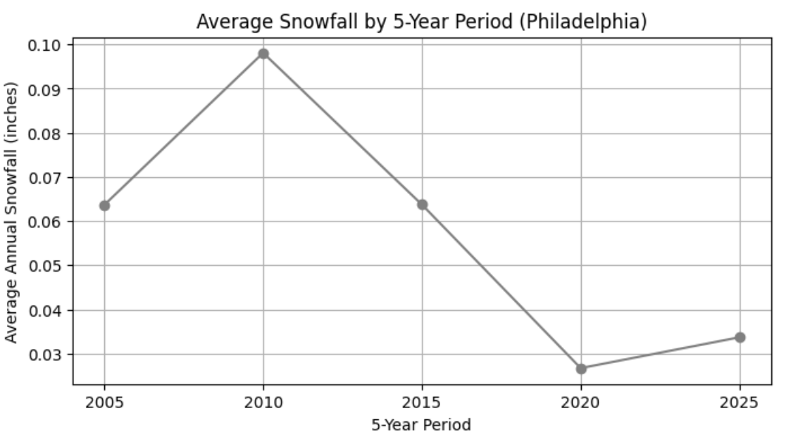

My Post
I began by examining the weather on November 23rd (my birthday) in Philadelphia over time to see whether there were any noticeable long-term patterns
November 23 Temperatures Over Time
I first graphed the high temperatures on November 23rd from 2005 to 2025. The data shows substantial year-to-year variability. Some years, such as 2010 and 2011, were unusually warm, while others were noticeably cooler

I then graphed the low temperatures for the same date and years. Similar to the highs, the lows fluctuate significantly across time rather than following a smooth trend

One pattern that stood out was a sharp dip between 2015 and 2020, particularly in 2018, where both the high and low temperatures were unusually low compared to surrounding years. To investigate further, I returned to the dataset and confirmed that November 23, 2018 recorded a high of 33°F and a low of 16°F, making it a clear outlier relative to the rest of the sample

Was November 2018 Unusually Cold Overall?
To determine whether this dip reflected a broader cold period rather than an anomaly, I examined average high and low temperatures across all days in November 2018

The results showed average temperatures of approximately 50°F (high) and 36°F (low). This shows that November 23rd, 2018 was significantly colder than the rest of the month, and it was an isolated weather event rather than evidence of a colder November overall
Indications of Climate Change?
Next, I looked for broader patterns by grouping November 23rd temperatures into five-year periods (2005–2010, 2010–2015, 2015–2020, and 2020–2025) to see if there was an upward trend in temperatures


When comparing both average highs and lows across these buckets, there was no consistent upward trend. Instead, the averages fluctuate across periods
Rainfall and Snowfall Trends
Now I’m interested to see if average yearly rainfall or snowfall has increased over the years, as another indicator of potential climate change


Both series exhibit considerable variability from year to year, and it was fairly inconclusive
To smooth out short-term fluctuations, I again grouped the data into five-year periods. These plots suggest a gradual decline in both average rainfall and snowfall over the past two decades. The bucketed averages provide more consistent evidence of a downward trend than the temperature data alone

